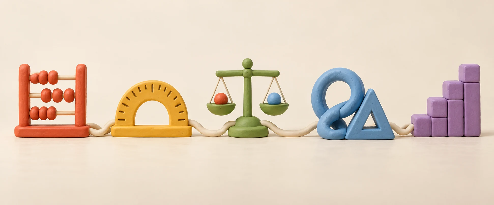
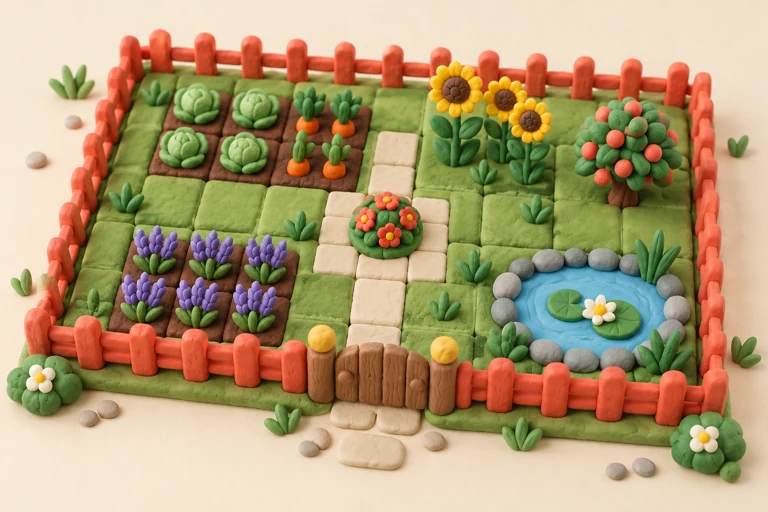
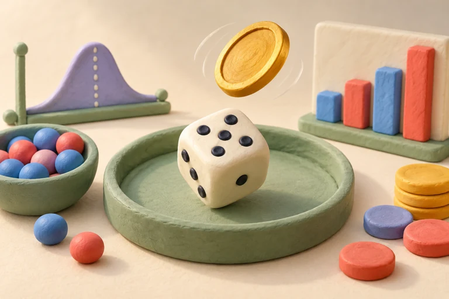
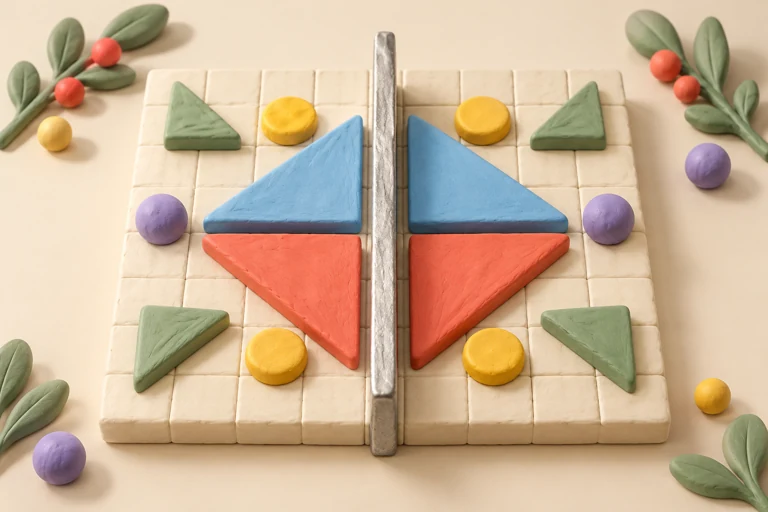

Tahmin et.
Bir açı, bir sayı, bir şekil. Sence değiştirince ne olur?
MERAK EDENLERİN MATEMATİK ATÖLYESİ
Bir fikri dene. Bir ilişkiyi keşfet.
Matematiği kendi hamlenle görünür kıl.
Sınıfını seç, ilk keşfine başla.
Açıları keşfet.
Öğretmen deneyiminden doğan
bir matematik atölyesi.
Soyut kavramlardan
dokunabildiğin fikirlere.
Oyunlar, laboratuvarlar ve kısa çalışmalar.
Hepsi sınıfına göre, tek bir atölyede.

8. sınıfta şu an ortak uzamsal düşünme etkinliği bulunuyor. İçerikler geliştikçe atölye de büyüyor.
Bir açı, bir sayı, bir şekil. Sence değiştirince ne olur?
Ölç, yerleştir, yapını kur. Fikrini etkinliğin içinde sına.
Sonuçları karşılaştır. “Neden?” sorusunu öğretmeninle birlikte düşün.
İki eş parça. Bir bütün.
Bir parçası: yarım.

Aynı çevreyle farklı bahçeler kur.
Alan nasıl değişiyor, keşfet.

Tahminini yap, deneyini tekrarla.
Verilerin anlattığına bak.

Bir şekle başka bir taraftan bak.
Yansımanın ilişkilerini incele.
Ufkora, matematik öğretmeni Ogün Şeker’in ders deneyiminden doğan bir eğitim teknolojisi girişimi. Amacımız, matematiği öğrencinin deneyebildiği, öğretmenin üzerinde konuşabildiği bir keşfe dönüştürmek.
Bugün oyunlar ve etkileşimli laboratuvarlarla başlıyoruz. Öğretmen denetiminde kişiselleştirilmiş geri bildirim ve Claude API entegrasyonu geliştirme planımızda; yapay zekâ özellikleri henüz aktif değil.
Ogün’e yaz ↗Bir öneri, bir soru ya da atölyede karşılaştığın bir durum. Mesajını Ogün’e iletebilirsin.
ogunsekerr@ufkora.com ↗Matematiği kendi hamlenle keşfet.
Sınıfını seç ↗